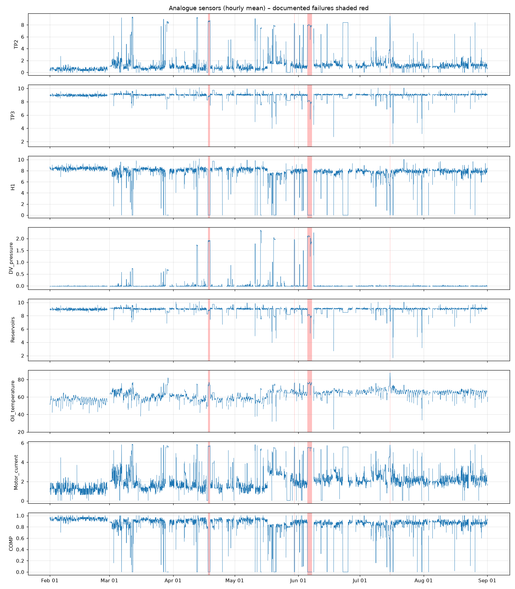
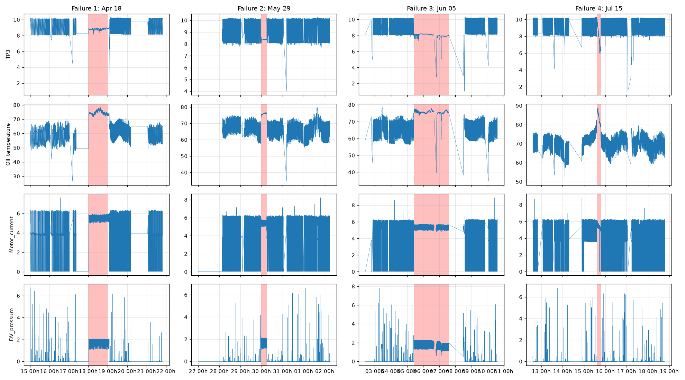
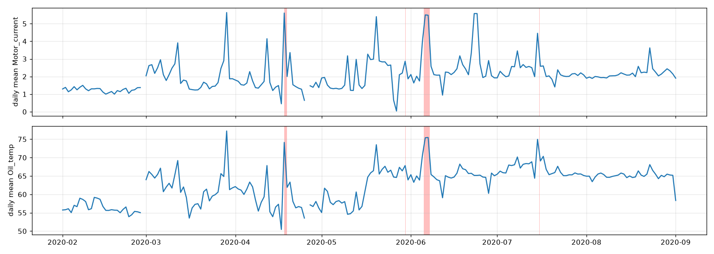
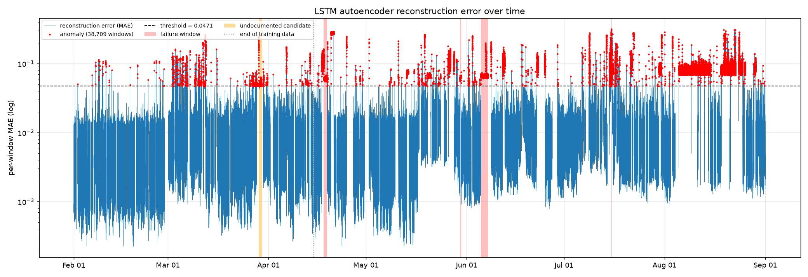

CompressorWatch: spotting a faulty metro air compressor from its sensors
CompressorWatch learns what a healthy compressor looks like and raises an alert when the sensors stop looking like that. It caught nearly every documented air-leak failure in the data. We also tried to predict failures in advance and to estimate remaining life. Those did not work, and this report says so.
1 · The problem
Metro trains rely on an Air Production Unit (APU). It compresses air for brakes, doors and suspension. When it fails in service, the train comes out of operation. Someone has to notice quickly that the compressor is not behaving, and the unit has 15 sensors that already describe how it behaves.
The data has no fault labels. We cannot train a model on examples of "faulty", because there are only four documented failures. So CompressorWatch is built the other way round: learn normal, and call anything that departs from normal a fault.
What the project does
- Learns normal compressor behaviour from healthy history only.
- Scores every 10-minute window of sensor data for how unusual it is.
- Turns persistent unusual behaviour into a graded alert: WATCH, SCHEDULE or URGENT.
- Reports honestly how often it is right and wrong, testing on whole failures it has never seen.
2 · The dataset
MetroPT-3 contains readings from an APU on a Metro do Porto train between 1 February and 1 September 2020. It has 1,516,948 rows and 15 signals: 8 analogue and 7 digital. The unit logs about every 10 seconds (0.1 Hz). There is no label column. Failure times come from maintenance reports published with the dataset.
Signals
Documented failures
Four air-leak failures are documented. We keep all four out of the training data so the detector is tested on faults it has never seen.
Data quirks that shaped the design
- Logging gaps. The compressor idles for long stretches and nothing is logged. Short gaps (up to 30 s) are filled. Longer ones stay missing and no window may cross them.
- Flat-lined sensor. The TP3 pressure sensor is stuck on 27 May, 23 June and 24 June. Those days are masked everywhere.
- Undocumented anomaly on 29 March. Kept out of training and reported separately.
- Drift. Normal behaviour shifts over the months, most visibly in August. This is the main source of false alarms.



3 · Method
The detector
An LSTM autoencoder is a neural network that squeezes a 10-minute window of sensor readings into a short summary and tries to rebuild it. Trained only on healthy data, it rebuilds healthy windows well and faulty ones badly. The rebuild error is the "how unusual is this" score.
It trains on 69,606 windows from 1 Feb to 14 Apr 2020, with 29 March excluded. The cut-off is 72 hours before the first failure, so no failure is in training. Training ran for epochs and the best was epoch . A window counts as unusual when its error exceeds the training mean plus three standard deviations, a threshold of .
How it is tested
A random split would put near-identical windows, minutes apart, in both training and test, which flatters any model. We instead split the timeline into four blocks. Each holds exactly one failure and the days around it. A model trains on three blocks and is scored on the fourth.
4 · Results: fault detection
Anomaly score over time
Score is reconstruction error divided by the threshold, so 1.0 is the alarm line. Hourly maximum on a log scale. Red bands are the four failures. The strip under the curve is the alert level.
During the four failures, of windows sit above NORMAL, and the score stays above the threshold for hours at a stretch. The detector also found the undocumented 29 March anomaly without being told about it.
The cost: false alarms
It is not free. of healthy windows also leave NORMAL, and the rate climbs sharply in August as the compressor's normal behaviour drifts. The size of the score does not tell you how bad a fault is: failure windows all sit at 1.2–1.5× the threshold, while some of the biggest scores belong to healthy drift. Training for more epochs did not improve this.
Training loss
Loss on training and validation windows.

Failure inspector
Comparison with published work
The dataset comes with a reference paper (Davari et al., IEEE DSAA 2021) that detects faults with a sparse autoencoder. We could not read its results. A later paper, Decision Threshold Selection and Low-Pass Filter Application for Anomaly Detection with Sparse Autoencoder (ENIAC), re-implemented that method on the same data and reports absolute numbers.
| Method | Recall | False-positive rate | Precision | F1 |
|---|---|---|---|---|
| Sparse autoencoder, filter on the classification (ENIAC) | 8–24% | 0.8–4.3% | 13–21% | 11–17% |
| Sparse autoencoder, filter on the score, Box and Perc thresholds (ENIAC) | 53–70% | 21–27% | 6–7% | 11–12% |
| CompressorWatch LSTM autoencoder | 100% | 20.3% | 13.7% | 24.2% |
Read this as the same ballpark, not a win. The ENIAC numbers score individual compressor cycles from March to July against the dataset authors' labels, with thresholds tuned to maximise F1. Ours score 10-minute windows from 15 April to August against the four documented failure periods, with a fixed mean + 3σ threshold. The two evaluations are different, so the numbers are not directly comparable. A fair comparison would run the sparse autoencoder with its low-pass filter on our splits.
5 · Alert levels
A single unusual window is often just noise, so an alert needs persistence. The detector must flag five windows in a row (5 minutes) before anything happens. After that the level rises with how long the behaviour lasts: WATCH at once, SCHEDULE after 60 minutes and URGENT after 240. A small risk matrix combines that with a consequence level, fixed at major for an air leak.
Risk matrix
Alert mix
When did the alert fire, relative to the logged failure start?
Positive = the alert fired before the time in the maintenance report. Negative = after. F1 was flagged 13.6 h ahead of its logged start, so a fault was probably already developing. For F2 and F3 the alert fired about an hour after the logged start, and F4 fired at the start. These are detection times, and the logged start is only the maintenance report's estimate. Over the whole period there were 34 SCHEDULE-or-higher alert episodes that never touched a failure.
6 · What we tried that did not work
The original plan had four parts. Two of them failed the same test the detector passed, so they are not part of CompressorWatch. They stay here because the failures are informative.
Predicting a failure in the next 24 hours
We trained an XGBoost classifier on summary statistics of each window plus the detector's score, with the label "a failure starts within 24 hours". Pooled across held-out failures, the ROC-AUC is , which is a coin flip. Two failures look good (F2 and F3). The other two are worse than guessing, so the model learned nothing that carries from one failure to the next.
Per held-out failure, 24 h horizon
ROC-AUC by prediction horizon
Asking for 1, 3, 6, 12 or 24 hours ahead makes no difference. The dashed line is chance.
Drift-robust features
We suspected that absolute sensor levels drift, so we tried features relative to a trailing 24 h baseline. Pooled ROC-AUC at 24 h got worse, so we stopped.
Top SHAP features
SHAP shows what the classifier leaned on. Because the classifier has no out-of-sample skill, this describes the model, not the causes of failure.
Estimating remaining useful life
A gradient-boosting model tried to estimate the hours left before a failure, inside the 72 hours leading up to it. It did worse than always answering with the average.
Pooled error is against for the constant guess. The model wins only on F4. Rank correlation near or below zero means its prediction does not fall as failure approaches. Inside failures (true remaining life 0) it predicts about 21 hours on average.
Letting those models help the alerts
We also tried letting the classifier probability and the RUL estimate raise the alert level. False SCHEDULE-or-higher episodes rose from 34 to 150 and the warning time barely moved. That option is off.
Why they probably failed
- Four events. Holding one out leaves three to learn from, and the failures differ in length (4.5 h to 52.5 h).
- Drift. A model keyed to absolute levels learns the season, not the fault.
- Abrupt onset. An air leak may leave no gradual signature in these sensors. The detector sees the leak once it is happening, not the lead-up.
7 · Limitations and next steps
Limitations
- Around one in five healthy windows leaves NORMAL, mostly through drift. That is too many for dispatching crews on every alert.
- The 60 and 240 minute thresholds were chosen while looking at these four failures, so the timing results are optimistic.
- Everything rests on four failures from one compressor in one year. It has not been tested on another train.
- No simple rule (for example "pressure outside its normal range for an hour") has been compared against the neural network yet.
What we would build next
- Say which sensor is off. Split the reconstruction error by sensor so each alert reads "TP3 and motor current are abnormal". This is the most useful upgrade for a technician.
- Handle drift. Refit the baseline on a rolling window, or detect when the machine has moved to a new normal, to bring the false alarms down.
- Sensor-health check. A rule that catches a stuck sensor, like the flat-lined TP3 days that were found by hand.
- Add a simple baseline. If a plain rule matches the autoencoder, say so.
- Try the reference paper's design. A sparse autoencoder, a low-pass filter on its output, and separate analogue and digital detectors.
8 · Conclusion
The most useful habit in this project was the test, not the model: hold out a whole failure, compare against a naive baseline, and report what fails. That test is why the page describes a fault alarm and not a crystal ball.
References
Predictive maintenance based on anomaly detection using deep learning for air production unit in the railway industry.
Study of the APU of a Metro do Porto train using a sparse autoencoder (SAE) on analogue and digital sensors, with a low-pass filter on the output and a variational autoencoder for comparison. Reported SAE results beat the VAE by 14% (recall), 77% (precision) and 37% (F1). Abstract held in the repository at docs/researchpaper.txt.
Decision Threshold Selection and Low-Pass Filter Application for Anomaly Detection with Sparse Autoencoder. ENIAC. Re-implements the sparse autoencoder of the paper above on MetroPT-3 and reports recall, precision, F1 and false-positive rate. sol.sbc.org.br
MetroPT-3 Dataset. UCI Machine Learning Repository, dataset 791. archive.ics.uci.edu/dataset/791
Reproducing
Code, configuration and saved models are in the project repository. Every threshold and hyperparameter is in config.py. Train the detector with python -m src.models.autoencoder and run the rest with python main.py.